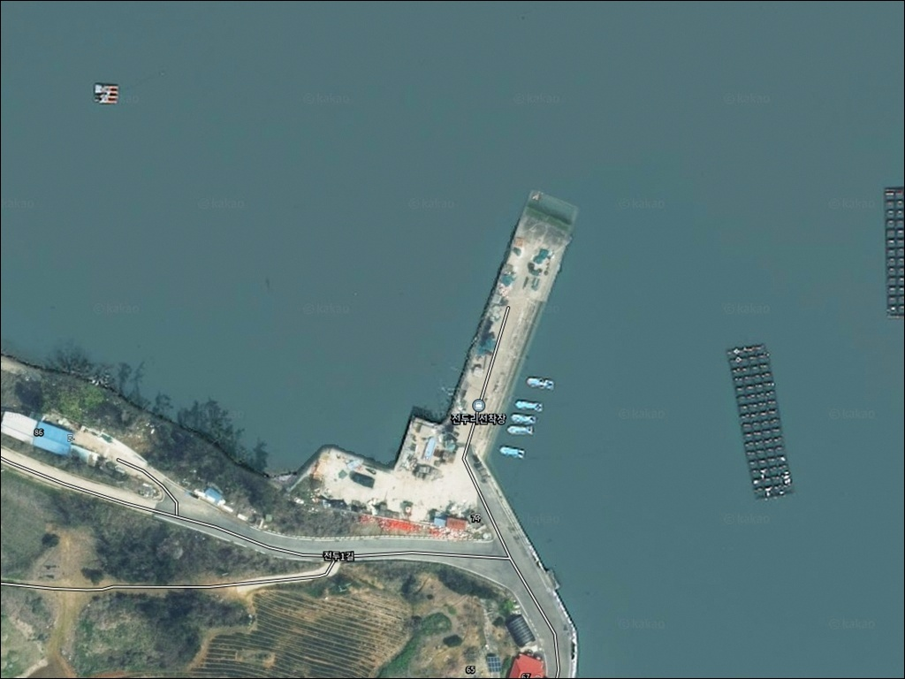
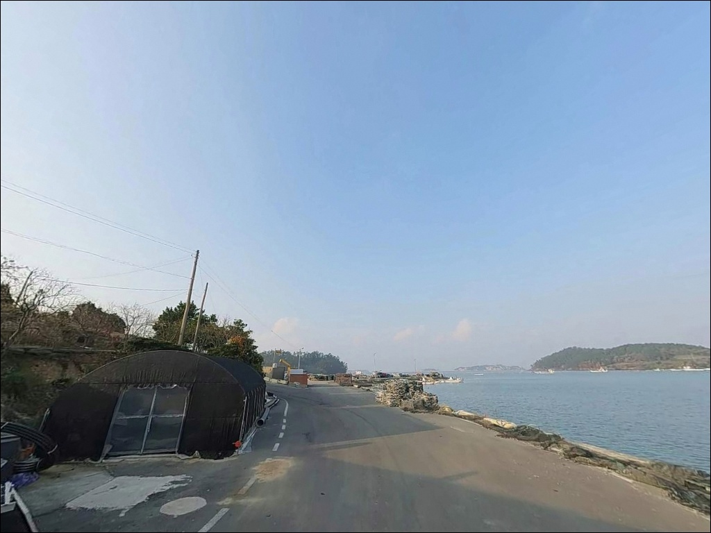
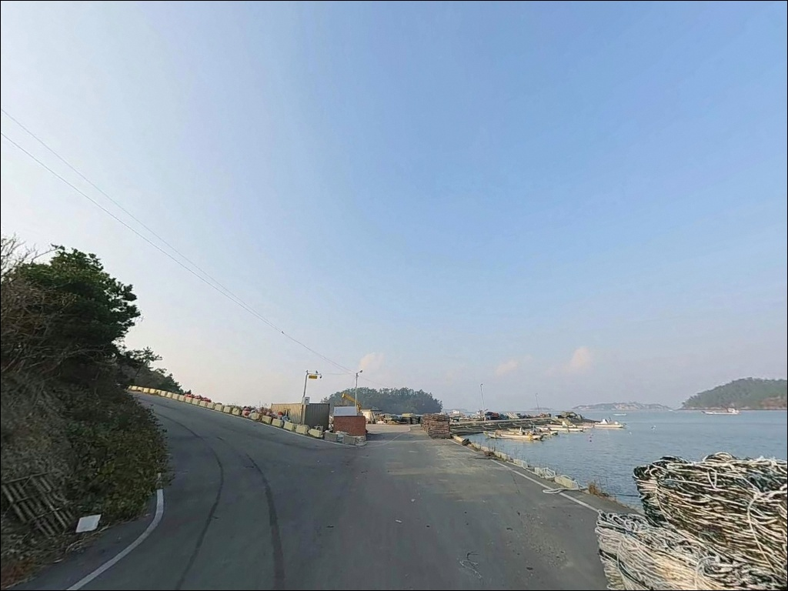
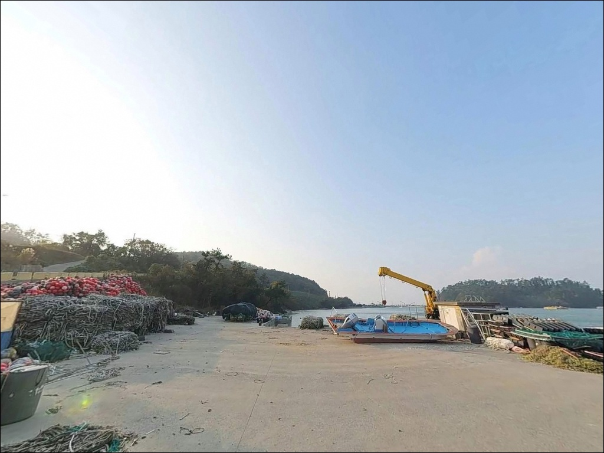
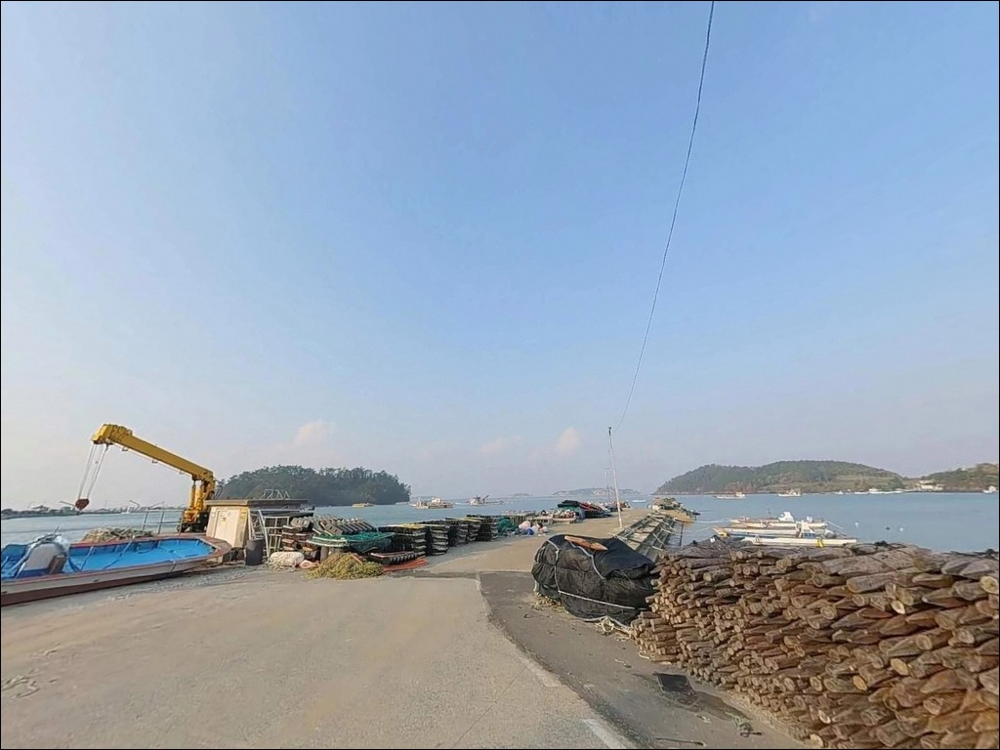
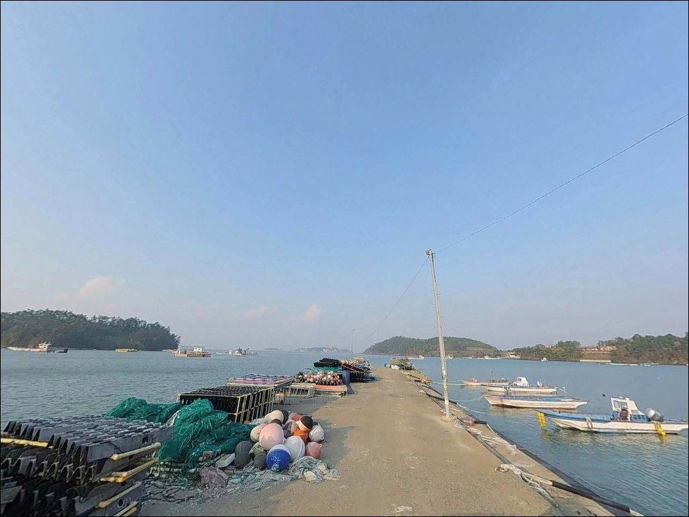
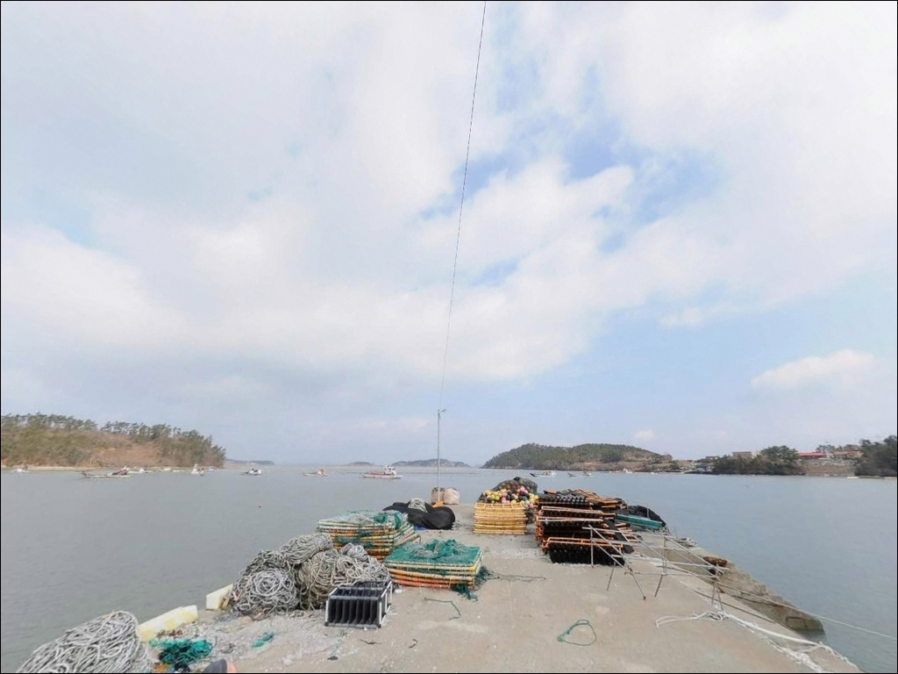
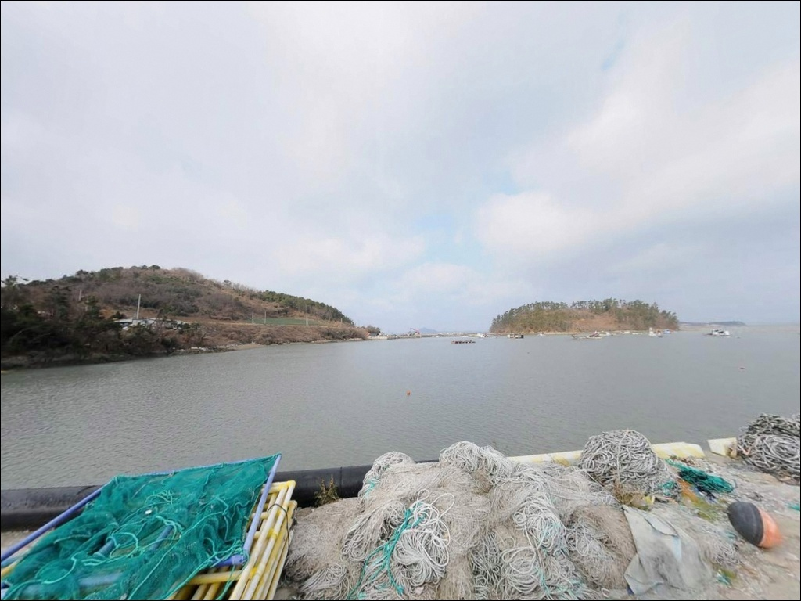
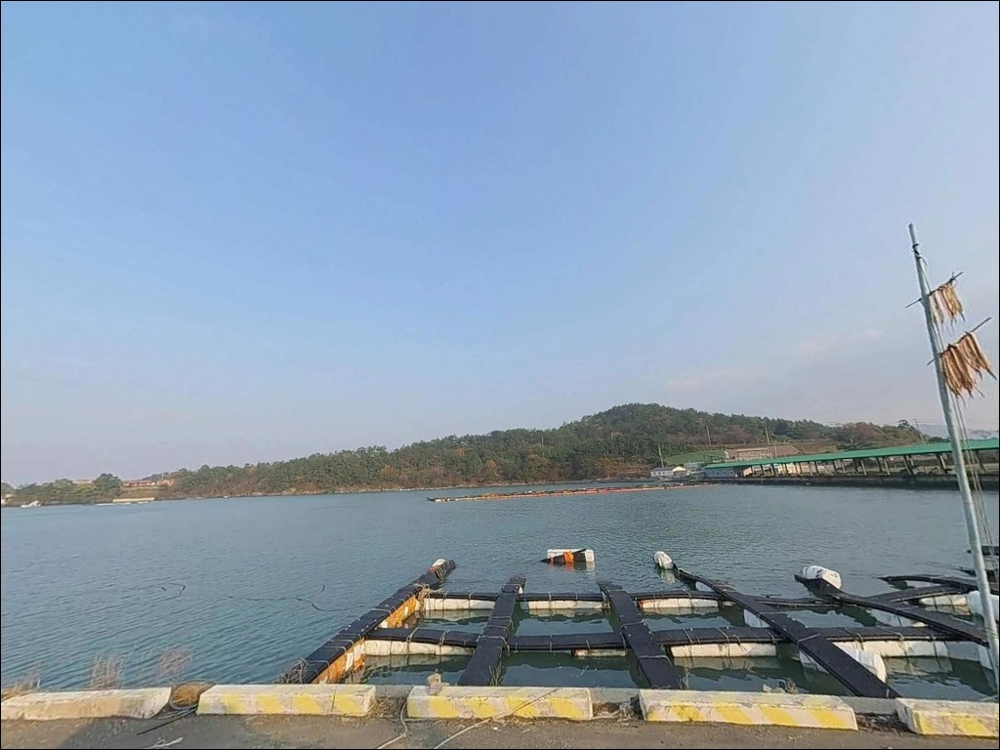

전두리선착장, 진도 전남 진도군 바다의 여운이 오래 남는 차박, 낚시 감성 포인트


포인트 안내
전두리선착장
전남 진도군 진도읍 수유리 1007-5
진도 해역을 처음 찾는 낚시인이 가장 자주 놓치는 판단은
물때 확인입니다.
사리 전후 강한 조류가 선착장 앞을 훑고 지나갈 때는
어떤 채비를 써도 컨트롤이 어렵고,
낚시 자리가 무용지물이 되는 상황이 생깁니다.
진도 해역에서는 물때를 모르고 진입하면
조류가 채비를 먼저 가져갑니다.
이 글은 전두리선착장의 진입 여건,
지형 구조, 낚시 방식 적합성에 집중합니다.
조황 단정이나 특정 어종 보장은
이 글의 범위에 포함되지 않습니다.

1. 진입 동선과 포인트 접근성
전두리선착장은 진도읍 중심에서
북서쪽으로 5~6km 거리의 해안에 위치합니다.
수유리 마을 내부 도로를 통해 접근하는 구조로,
진입로는 왕복 1차선 수준의
좁은 마을길로 연결됩니다.
소형~중형 차량 기준으로 진입에 큰 무리는 없지만,
대형 SUV나 캠핑 장비를 갖춘 차량이라면
출발 전 위성지도로 경로를 확인하고 가는 편이 안전합니다.
선착장 인근 회차 공간이 넉넉하지 않은 구조입니다.
소형 공터나 도로 끝 지점을 활용해야 하는 경우가 있어,
후진 진출이 어려운 차량은
진입 전 경로를 더 꼼꼼히 살펴야 합니다.
주차는 선착장 바로 앞 소형 공간이나
마을 도로 가장자리를 활용하는 방식입니다.
어선 접안 및 이동 동선과 겹치지 않는 자리를
현장에서 먼저 확인하고 자리를 잡는 것이
기본 매너입니다.

2. 차박 환경과 야간 체류 여건
전두리선착장은 내만형 지형에 자리한 소규모 마을 선착장입니다.
수유리 마을과 가까운 위치여서
야간에도 생활 조명이 일부 남아 있는 환경입니다.
완전한 암흑 환경을 기대하기는 어렵지만,
민가 밀집도가 낮은 편이라
프라이버시는 어느 정도 유지되는 여건입니다.
공중화장실이 선착장 인근에 위치하고 있어
장시간 체류 시 기본 편의는 갖춰져 있습니다.
다만 주차 가능 공간이 협소한 편이어서
차박을 메인으로 삼기보다는
낚시 후 잠시 쉬어가는 형태로 활용하는 것이
현실적인 접근입니다.
바람의 경우 내만 구조라 외해 직접 노출은 적은 편이지만,
진도 해역 기상 변화가 빠른 편이므로
출발 전 기상 예보를 반드시 확인하는 것이
기본 준비입니다.


3. 주변 편의시설 및 인프라 현황
전두리선착장 반경 3km 이내에는
편의점이나 마트를 기대하기 어렵습니다.
수유리 일대는 소규모 농촌 마을 성격으로,
식수·얼음·낚시 소품은 출발 전에 챙겨야 합니다.
연료 역시 마찬가지입니다.
진도읍내 방향으로 10km권을 이동하면
인프라를 갖춘 시내 생활권에 닿을 수 있습니다.
진도읍 남동리에 CU 24시간 편의점이 위치하고 있어,
출발 전 부족한 소품이 있다면
읍내를 먼저 경유하는 동선이 효율적입니다.

4. 방문 전 반드시 챙겨야 할 준비사항
전두리선착장 방문 전에 가장 먼저 확인할 것은
물때입니다.
진도 해역은 명량수도 영향권에 포함되는 해역으로,
사리 전후에는 조류가 빠르게 흐릅니다.
바다타임에서 수유리 기준 물때를 확인하고
조금 전후 또는 만조 전후 타이밍을 맞춰
출발 시각을 조율하는 것이 기본 전략입니다.
기상 변화가 빠른 진도 해역 특성상
당일 아침 기상 예보를 다시 한번 확인하는 것이
포인트 낭비를 막는 조건입니다.
소형 선착장 특성상 밑걸림이 발생하는 구간이 있어
여분 채비는 넉넉하게 준비하는 편이 좋습니다.
마을 선착장이라 어선 조업이 이루어지는 공간입니다.
어선 이동 동선과 어구에 접촉하지 않도록
자리를 잡는 것이 기본 매너이며,
야간에는 헤드랜턴과 구명조끼를
반드시 착용해야 합니다.

5. 지형 구조가 만드는 낚시 여건
전두리선착장이 위치한 수유리 일대는
진도읍 북서쪽의 내만형 해안에 해당합니다.
이 지형은 역사적으로 홍어류가 서식하던 해역으로,
간척 이후에도 뻘 섞인 모래 바닥이
남아 있는 지형으로 추정됩니다.
선착장 접안부 주변 수심은 얕은 편이며,
끝단으로 갈수록 수심이 급변하는 구간이
형성되어 있습니다.
전두리선착장 끝단은 수심이 급변하는 구간으로,
원투 자리로 우선 검토할 수 있는 위치입니다.
선박 입출항 라인 주변에는
국지적인 조류 흐름이 형성될 가능성이 있어
찌낚시 자리로도 검토해볼 만한 구간입니다.
진도 해역 전반은 사리 물때에 조류가 강한 편입니다.
내만형이라 외해보다 흐름이 완만하지만,
조류가 살아나는 타이밍과
정조 전후를 구분해서 공략하는 방식이
이 포인트에서 효율적입니다.
최신 조황은 출조 전에 꼭 검색해 보시기 바랍니다.


6. 외항이 아니어도 성립하는 낚시 방식
이 포인트에서 가장 무난하게 맞는 낚시는
원투낚시입니다.
뻘 섞인 모래 바닥 지형에서는
도다리·붕장어·보리멸이 원투 채비에
반응하기 좋은 조건을 갖추고 있습니다.
선착장 끝단에서 외항 방향으로
채비를 멀리 보내 바닥을 긁는 방식이
이 포인트에 어울립니다.
찌낚시도 선착장 구조물 주변에서
성립되는 방식입니다.
선착장 접안부의 안정된 수면 조건을 활용해
노래미나 우럭류를 노려볼 수 있으며,
조류가 느려지는 조금 전후에
구조물 경계선을 따라 찌를 흘리는 방식이
어울립니다.
라이트 루어도 선착장 끝단에서 시도해 볼 수 있습니다.
소형 지그헤드나 메탈 채비로
외항 방향을 탐색하면
볼락이나 소형 회유 어종이
반응하는 타이밍이 있습니다.
야간 라이트게임은 선착장 조명 주변이
우선 탐색 구간입니다.

7. 전두리선착장이 기대에 못 미칠 때 대안 동선
주차 공간이 여의치 않거나
조류가 너무 강해 채비 운용이 어려울 때는
쉬미항 방파제가 첫 번째 대안입니다.
진도읍 북부권에서 접근이 비교적 편리한 방파제로,
규모가 더 크고 낚시 공간이 확보되어 있어
다양한 채비를 운용하기 좋은 조건입니다.
벽파항 방파제도 진도 북부권에서
검토할 수 있는 대안입니다.
규모가 큰 만큼 진입과 주차 여건이 안정적이며,
다양한 낚시 방식을 허용하는 지형 조건을
갖추고 있습니다.
처음 이 권역을 찾는다면
벽파항을 기점으로 삼고
전두리선착장을 병행 탐색하는 동선이
효율적입니다.
진도읍내 진도항 방향도
규모 있는 낚시 거점으로 활용할 수 있습니다.
편의시설 접근성이 좋아
장시간 체류 낚시를 계획한다면
거점으로 삼기에 적합합니다.

물때와 진입로 두 가지를 갖추면
전두리선착장이 달라 보입니다
원투낚시나 찌낚시 위주로 조용히 낚시를 즐기는 낚시인이라면
전두리선착장의 내만형 지형 조건은
충분히 시도해볼 만한 구조입니다.
규모 있는 항구나 대형 방파제가 아니라
한적한 마을 선착장에서
한두 가지 채비로 집중하는 낚시를 원하는 분께
어울리는 포인트입니다.
반면 진입로 확인 없이 대형 차량으로 방문하거나,
물때 계산 없이 사리 전후에 도착하면
채비 운용 자체가 어려워지는 상황이
생길 수 있습니다.
물때 확인, 자급 준비, 진입로 사전 점검,
이 세 가지를 갖추고 간다면
기억에 남는 포인트가 될 수 있는 곳입니다.
낚시를 마치고 조용히 하룻밤을 보내고 싶은 차박 여행자라면
공중화장실 위치를 먼저 확인하고
주차 공간 여건을 현장에서 파악한 뒤
자리를 정하는 방식이 현실적인 접근입니다.